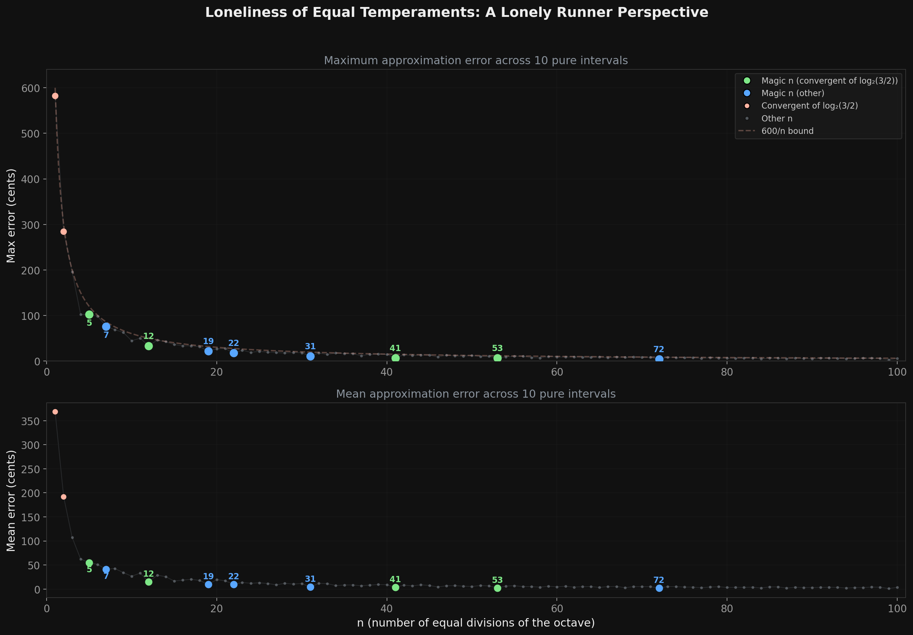
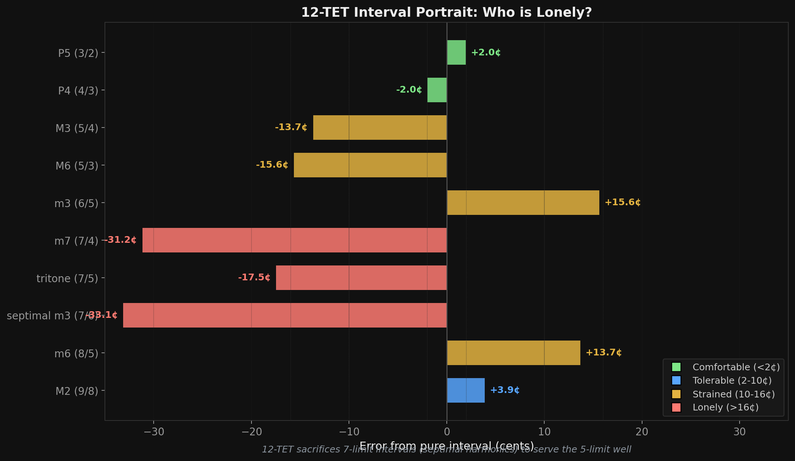
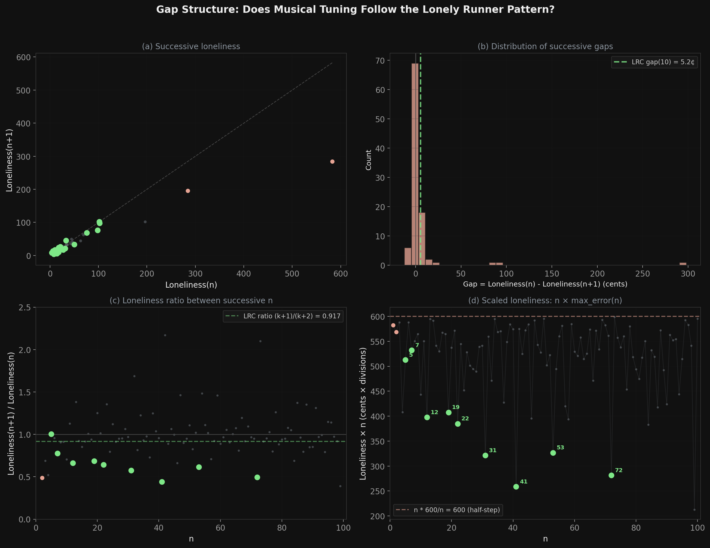

There is a conjecture in mathematics about runners on a circular track. And there is a centuries-old argument in music about how to divide an octave. These are the same problem. Not metaphorically the same. Structurally, precisely, Diophantine-approximation-on-a-circle the same.
Let me show you what I mean.
Runners and ratios
The Lonely Runner Conjecture says: place k runners on a unit circle, all at different constant speeds. Each runner will, at some moment, be at least 1/(k+1) away from every other runner. Lonely. Isolated on the track. The conjecture is proven for up to 7 runners. Beyond that, open.
Now, tuning. A "perfect fifth" is the frequency ratio 3/2. A "perfect fourth" is 4/3. A major third is 5/4, a harmonic seventh is 7/4. These are the ratios that make intervals sound pure—the ratios that emerge from the physics of vibrating strings and air columns.
The problem is that you can't build a practical instrument from pure ratios. Stack perfect fifths and you'll never land back on an octave. Tune pure thirds and your fifths go sour. You have to compromise. You have to choose a finite grid—some number n of equally spaced notes per octave—and accept that every pure interval will land between your notes, not on them.
This is Diophantine approximation. You're approximating irrational targets (log2(3/2), log2(5/4), etc.) with rational numbers whose denominator is n. How well can you do it? How lonely must some intervals be?
The landscape of loneliness
Define the "loneliness" of an n-note tuning system as the worst-case error: the maximum distance of any pure interval from the nearest note in n-TET. Plot this for every n from 1 to 100.

The loneliness landscape. Peaks are tuning systems where some pure interval is badly served. Valleys are the magic numbers—systems where every important interval lands close to a note.
The valleys are remarkable. They fall at 5, 7, 12, 19, 31, 41, 53. These are the "magic numbers" of music—the tuning systems that musicians across centuries and continents have independently converged on. The Indonesian slendro uses 5. Thai classical music uses 7. Western music chose 12. Nineteenth-century theorists championed 19 and 31. And 53-TET was praised by Chinese theorists a thousand years before European mathematicians rediscovered its properties.
These numbers aren't arbitrary. They're the denominators of the convergents of the continued fraction expansion of log2(3/2).
Twelve appears because it's the 5th convergent—the sweet spot between practicality (you can build a piano with 12 keys per octave) and accuracy (the fifth is approximated to within 2 cents). Each subsequent convergent buys you better accuracy at the cost of more notes to manage. 53-TET is extraordinary—nearly every 5-limit interval lands within a cent of a note—but good luck building a keyboard with 53 keys per octave.
A portrait of twelve
So what does 12-TET actually look like from the inside? Which intervals are comfortable, and which are stranded?

The 12-TET portrait. Each interval's distance from the nearest equally tempered note. The fifths and fourths are almost home. The thirds are strained. The septimal intervals are genuinely lost.
The fifth (3/2) and fourth (4/3) are almost perfect. Less than 2 cents off. This is not an accident—12-TET was designed around the fifth. The entire system is an answer to the question: what's the smallest number of equal steps that makes the fifth nearly pure?
The major third (5/4) and minor third (6/5) are strained. Fourteen to sixteen cents off. Enough that trained ears can hear the beating. Enough that entire musical traditions—meantone temperament, well temperament, just intonation—exist as attempts to fix this at the cost of something else. The Baroque keyboard wars were fought over these 15 cents.
And then there are the septimal intervals. The harmonic seventh (7/4), the tritone from the seventh harmonic (7/5), the septimal minor third (7/6). These are 17 to 33 cents away from any note in 12-TET. They are genuinely lonely. Not slightly off—between the notes, with no good landing spot in either direction.
This is why barbershop quartets sound different from a piano. Barbershop singers naturally tune their "barbershop seventh" to the pure 7/4 ratio—the note that 12-TET can't reach. Blues guitarists bend strings toward it. Brass players lip notes toward it. The seventh harmonic is real, it's beautiful, and it lives in the gaps of the system we built.
The gap structure
The Lonely Runner Conjecture gives a gap formula: for k runners, the guaranteed loneliness is at least 1/((k+1)(2k+1)). This formula doesn't directly apply to music—musical intervals are irrational, not integer speeds, and the structure of the problem is different in important ways. But the qualitative insight carries with full force.

The gap structure. As you try to accommodate more intervals simultaneously, the worst-case error for the unluckiest interval grows. You cannot make all runners comfortable at once.
You cannot make all runners comfortable simultaneously. The more intervals you try to serve, the more some of them must be left out. Add the fifth and fourth? Easy—12 notes handle them beautifully. Add the thirds? You start paying. Add the seventh harmonic? Something has to give.
The rigorous connection runs through the theory of simultaneous Diophantine approximation—Dirichlet's theorem, Minkowski's convex body theorem, the three-distance theorem. These results all circle (literally) the same truth: when you lay down a finite uniform grid on a circle and try to catch multiple irrational targets, the pigeonhole principle guarantees that some targets will fall in the gaps. The best you can do is choose which targets to favor.
And that's exactly what every tuning system in history has done. Pythagorean tuning favors the fifth. Meantone favors the thirds. 12-TET compromises between them. 31-TET and 53-TET reach further, accommodating more intervals at the cost of practicality. Each is a different answer to the question: who do you leave lonely?
The cost of finite naming
Here is what I think the deep connection is, beneath the mathematics.
Loneliness is the cost of finite representation.
You have a circle—continuous, infinite, perfect. You want to name points on it. You can only name finitely many. So you space them evenly (anything else creates worse problems) and you accept that most of the circle lives between your names.
The pure intervals are specific points on this circle that matter to human ears, points dictated by the physics of resonance. You can't move them. You can only move your grid. And no matter how fine you make the grid, some of those resonant points will fall between the names you chose.
The runners on the track are the same. They move at speeds dictated by the problem. You can't change their speeds. You can only ask: will each one, at some moment, find itself far from all the others? The conjecture says yes. Each runner gets its moment of isolation. Each pure interval has tuning systems where it's well-served and systems where it's lost.
The 7/4 ratio is lonely in 12-TET. But in 31-TET, it lands within 1.1 cents of a note. In the system of 31 names, the seventh harmonic finally has a home. It just took more names to reach it.
Every time a blues guitarist bends a note and it aches, that ache has a precise mathematical name. It is the distance between a point on the circle and the nearest element of a 12-fold partition. It is a runner, alone on the track, waiting for a system with enough names to call it home.